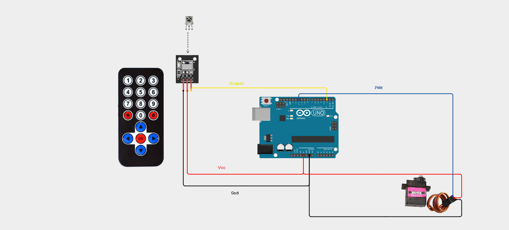

Remote Trashcan
Embedded Prototyping & IR Logic
Project Demonstration
Communication Protocol
The system utilizes **Infrared (IR) Communication** to facilitate wireless actuation. By integrating an **Infrared Remote Receiver Module**, the device decodes modulated light signals from a handheld transmitter into digital commands.
- Decodes 38kHz modulated IR signals
- Translates hex codes to PWM servo positions
- Line-of-sight wireless range of ~5-10 meters
IR Protocol Decoding
Technical Documentation
System Schematic

Wiring Prototype (Real Life)

Technical Challenge: Signal Acquisition
The Problem: Non-Responsive IR Module
During initial integration, the IR Receiver Module failed to register any input signals from the handheld remote control.
Debugging Methodology
I utilized the **Arduino Serial Monitor** to print raw data strings upon interrupt triggers. When no hex codes were displayed, I performed a systematic check of the wiring connections and power rails. Despite the firmware and hardware connections being verified as correct, the signal remained flat.
The Resolution
The root cause was identified as a faulty handheld transmitter. Upon swapping to a new remote control, the Serial Monitor immediately began receiving valid signal codes. The code then functioned as intended, successfully driving the servo motor based on the decoded IR commands.
Technical Source Code
Review the IR decoding and servo control logic on GitHub.